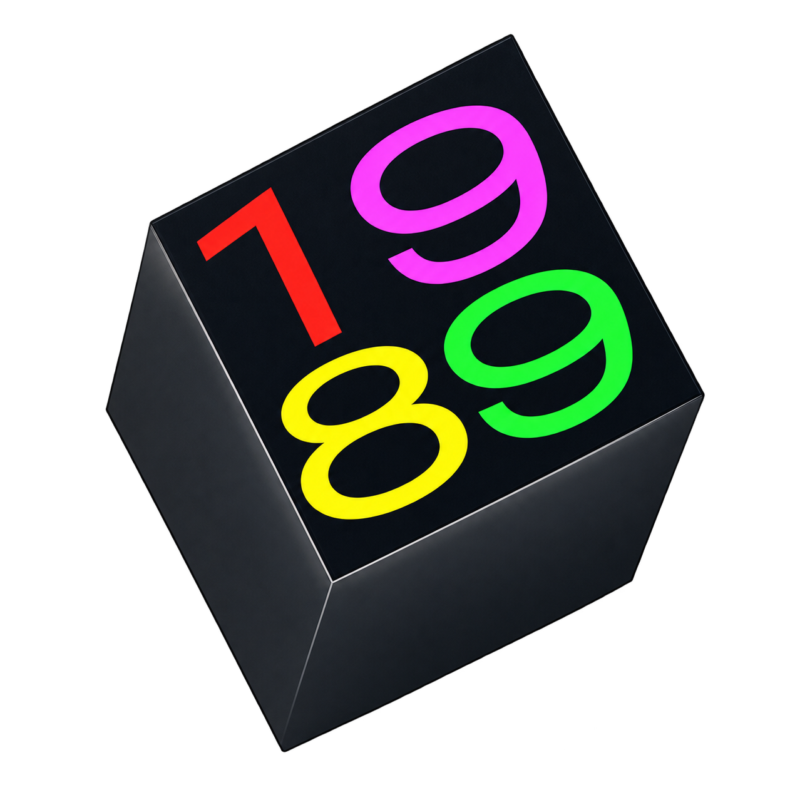

The NeXT chapter
Javascript 1989
Loading WebAssembly…
Choose a model before starting.
NeXTcube 68040 · 25 MHz · 32 MB · Monochrome1120 × 832

Your NeXT chapter.
Choose a system disk, or explore the ROM monitor.
MEGAPIXEL DISPLAY◐
1989 workstation
NeXT keyboard